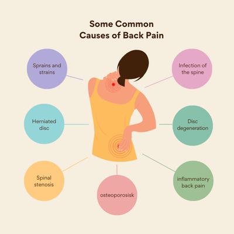

Neck pain relief physotheraphy in lucknow
Neck pain often occurs due to incorrect posture and is more common in older people as their bones tend to become weaker with age. However, in recent times, young people are also experiencing neck pain. The primary reason behind this is the excessive use of mobile phones in improper postures, such as lying in bed, sitting incorrectly, or using devices for extended periods without taking breaks.
This leads to strain on the neck muscles, making them weak and causing pain. Over time, the pressure on the neck bones increases, resulting in further discomfort and weakness in the neck.
We provide effective solutions and exercises to help reduce and eliminate neck pain without the need for medication. Our physiotherapy services are available at a very affordable price. If you're struggling with neck pain, call us today—we're here to help! Thank you.

Why Choose Our Neck Pain Relief Physiotherapy in Lucknow
-
Customized Treatment Plans
We provide tailored treatment plans specifically designed for your unique problems. The exercises and therapies suggested will address your specific condition without any additional charges. Feel free to contact us for a personalized consultation.
-
Affordable Services
We offer quality services at reasonable prices to ensure you receive effective therapy without straining your budget. Our physiotherapy services in Lucknow are priced lower than the market rates, making it accessible for everyone. Visit us today!
-
Experienced Professionals
Our team consists of highly qualified trainers and doctors with excellent academic backgrounds and extensive experience. Trust us for the best neck pain treatment in Lucknow under the guidance of skilled professionals.
-
Non-Invasive Solutions
We provide relief from neck pain without the use of medicines. Our experts will guide you on daily exercises that help alleviate pain and improve your neck's strength. Experience effective and affordable physiotherapy services in Lucknow and say goodbye to neck pain for good!
Role of Physiotherapy in Recovery
The role of physiotherapy is to provide personalized training to address specific needs. We use techniques like manual therapy, stretching, and exercises to ensure long-term benefits. With physiotherapy, you can achieve lasting recovery and improved well-being.
Top Exercises for Neck Pain Relief
If you’re dealing with neck pain, incorporating targeted exercises can help reduce stiffness, improve mobility, and provide long-term relief. Here are the best physiotherapy-recommended exercises for neck pain relief:

1. Neck Stretching

How to Perform:
- Sit or stand upright.
- Slowly tilt your head toward one shoulder (ear to shoulder).
- Hold for 15-20 seconds, then repeat on the other side.
- Benefits: Reduces tension and increases flexibility in neck muscles.
2. Neck Rotation
- How to Perform:
- Gently turn your head to one side (look over your shoulder).
- Hold for 10-15 seconds, then switch sides.
- Benefits: Improves neck mobility and reduces stiffness.
3. Chin Tucks
Sit straight and pull your chin inward, creating a “double chin.”
Hold for 5 seconds and relax. Repeat 10 times.
Benefits: Corrects poor posture and aligns the spine properly.
4. Shoulder Shrugs
How to Perform:
- Lift your shoulders up toward your ears.
- Hold for 3-5 seconds, then release.
- Perform 10 repetitions.
- Benefits: Relieves tension in neck and shoulder muscles.
5. Levator Scapulae Stretch
-
How to Perform:
- Relax one shoulder and place that arm behind your back.
- Use the opposite hand to gently pull your head downward and sideways.
- Hold for 15-20 seconds and repeat on the other side.
- Benefits: Reduces tightness in the neck and upper back.
6. Isometric Neck Exercises
- How to Perform:
- Place your hand on your forehead and gently push against it without moving your head.
- Hold for 5 seconds, then repeat on each side (front, back, left, and right).
- Benefits: Strengthens neck muscles and prevents future pain.